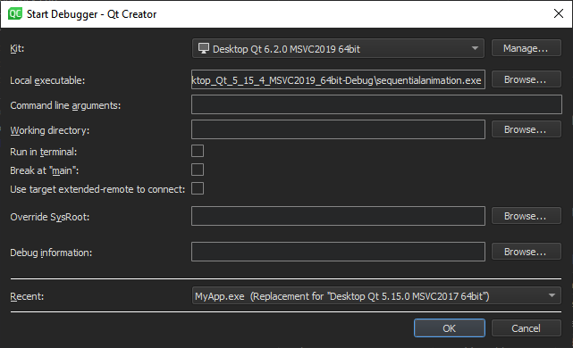
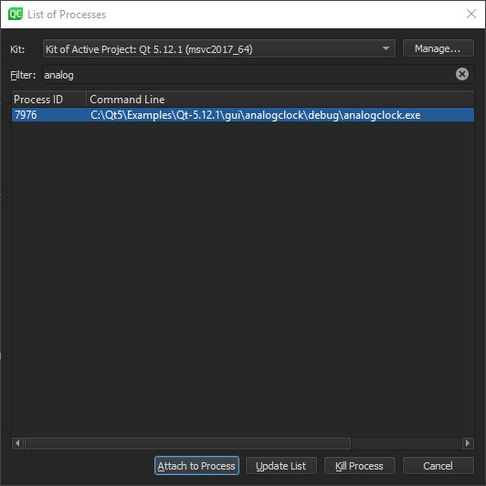
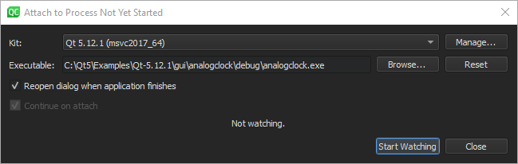

Launching the Debugger
You can start an application from an open project under the control of a debugger in the following ways:
- Select (Start Debugging of Startup Project).
- Press F5.
- Enter
drin the locator, and select the project to debug. - Go to Debug > Start Debugging > Start Debugging of Startup Project.
Qt Creator checks whether the compiled application is up-to-date, and rebuilds and deploys it if you set the Build before deploying field to build the whole project or the application to run and select the Always deploy before running check box in Preferences > Build & Run > General. To debug the application without deploying it, select Debug > Start Debugging > Start Debugging Without Deployment.
The debugger then takes over and starts the application with suitable parameters.
When using GDB or CDB as debug backend, you can specify additional commands to execute before and after the backend and debugged application are started or attached in Preferences > Debugger > GDB and CDB. For more information, see Debugger Preferences.
To let the debugger read the user's default .gdbinit file when it starts, select the Load .gdbinit file on startup check box in GDB settings. For more information, see Specifying GDB Settings.
Note: Starting a C++ application under the control of the debugger can take a long time. Typically, in the range of several seconds to minutes if you use complex features.
For Python projects, start debugging the main.py file. If you encounter problems, check the active build target in the kit selector.
Debugger Operating Modes
The debugger plugin can run the native debuggers in various operating modes depending on where and how you start and run the debugged process. Some of the modes are only available for a particular operating system or platform.
In general, F5 and the Start Debugging of Startup Project button start the operating mode that fits the context. So, for a C++ application that uses the MinGW toolchain targeting desktop Windows, the GDB engine starts in start internal mode. For a QML application that uses C++ plugins, a mixed QML/C++ engine starts, with the C++ parts being handled by GDB and GDB server remote debugging.
Change the run configuration parameters (such as Run in Terminal) in the run settings of the project, or select options from the Debug > Start Debugging menu to select other modes of operation.
The debugger can run in the following modes:
- Start internal to debug applications developed inside Qt Creator, such as a Qt Widgets-based application.
- Start external to start and debug processes without a proper Qt Creator project setup, either locally or on a remote machine.
- Attach to debug processes already started and running outside Qt Creator, either locally or on a remote machine.
- Core to debug crashed processes on Unix.
- Post-mortem to debug crashed processes on Windows.
Start Internal
Start internal mode is the default start mode for most projects, including all projects using a desktop Qt version and plain C++ projects.
If you need a console window to operate your application, for example because it accepts console input from the user, go to Projects > Run Settings and select the Run in terminal check box.
If a console application does not start up properly in the configured console and the subsequent attach fails, you can diagnose the issue by using CDB's native console. Select Preferences > Debugger > CDB > Use CDB console to override the console set in the Windows system environment variables. Note that the native console does not prompt on application exit.
To launch the debugger in start internal mode, click the Start Debugging button for the active project.
You can specify breakpoints before or after launching the debugger. For more information, see Setting Breakpoints.
Start External
You can debug any executable on your local or on a remote machine without using a project. You specify a build and run kit that identifies the device to debug the application on.
While this mode does not strictly require a project to be open in Qt Creator, opening it makes setting breakpoints and stepping through the code easier.
To start and debug an external application:
- Select Debug > Start Debugging > Start and Debug External Application.

- In the Kit field, select the build and run kit to use for building the project.
- In the Local executable field, specify the path to the application executable on the local machine.
- In the Command line arguments field, specify command line arguments to be passed to the executable.
- In the Working directory field, specify the working directory. It defaults to the directory of the build result.
- Select the Run in terminal check box for console applications.
- Select the Break at "main" check box to stop the debugger at the main function.
- Select the Use target extended-remote to connect check box to create the connection in the
target extended-remote mode. In this mode, when the debugged application exits or you detach from it, the debugger remains connected to the target. You can rerun the application, attach to a running application, or use monitor commands specific to the target. For example, GDB does not exit unless it was invoked using the--onceoption, but you can make it exit by using themonitor exitcommand. - In the Override SysRoot field, specify the path to the
sysrootto use instead of the defaultsysroot. - In the Debug information field, specify the location for storing debug information. You cannot use an empty path.
- In the Recent field, you can select a recent configuration to use.
Attach
You can attach the debugger to applications that are already running or instruct the debugger to attach to an application when it starts.
Attaching to Running Applications
To attach the debugger to an application already running on your local or on a remote machine:
- Select Debug > Start Debugging > Attach to Running Application.

- In the Filter field, enter a string to filter processes by their process ID or name.
- Select a process in the list, and then select Attach to Process to start debugging.
To refresh the list of running processes, select Update List.
To terminate the selected process, select Kill Process.
While this mode does not strictly require a project to be open in Qt Creator, opening it makes setting breakpoints and stepping through the code easier.
You can specify breakpoints before or after attaching the debugger to the application. For more information, see Setting Breakpoints.
Attaching to Processes when They Start
To instruct the debugger to watch an application process and to attach to it when it starts:
- Select Debug > Start Debugging > Attach to Unstarted Application.

- In the Kit field, select the build and run kit to use for building the project.
- In the Executable field, specify the path to the application executable.
- Select the Reopen dialog when application finishes check box to return to this dialog when the application is closed.
- Select the Continue on attach check box to instruct the debugger to keep the application running after attaching to it.
- Select Start Watching to wait for the application process to start.
Core
Use the core mode to inspect core files (crash dumps) that are generated from crashed processes on Linux and Unix systems if the system is set up to allow this.
To enable the dumping of core files on a Unix system, enter the following command in the shell from which the application is launched:
ulimit -c unlimited
To launch the debugger in the core mode:
- Select Debug > Start Debugging > Load Core File.

- In the Kit field, select a build and run kit that was used for building the binary for which the core file was created. If the core file stems from a binary not built by Qt Creator or a process not initiated by Qt Creator, select a kit that matches the setup used as closely as possible, in respect to the specified device, tool chain, debugger, and sysroot.
- In the Core file field, specify the core file to inspect.
- In the Executable of symbol file field, specify a file that has debug information corresponding to the core file. Typically, this is the executable file or a
.debugfile if the debug information is stored separately from the executable. - In the Override start script field, specify a script file to run instead of the default start script.
- In the Override SysRoot field, specify the path to the
sysrootto use instead of the defaultsysroot.
Even though using a properly configured project that has the sources of the crashed application is not strictly necessary, it is helpful.
Post-Mortem
The post-mortem mode is available only on Windows, if you installed the debugging tools for Windows.
The Qt Creator installation program asks you whether you want to register Qt Creator as a post-mortem debugger. To change the setting, select Preferences > Debugger > General > Use Qt Creator for post-mortem debugging.
You can launch the debugger in the post-mortem mode if an application crashes on Windows. Click the Debug in Qt Creator button in the error message from the Windows operating system.
Starting the Debugger from the Command Line
You can use the Qt Creator debugger interface from the command line. To attach it to a running process, specify the process ID as a parameter for the -debug option. To examine a core file, specify the file name. Qt Creator executes all the necessary steps, such as searching for the binary that belongs to a core file. To connect to a debug server, specify the server location and port number.
For example:
C:\qtcreator\bin>qtcreator -debug 2000C:\qtcreator\bin>qtcreator -debug core=core.2000C:\qtcreator\bin>qtcreator -debug some.exe,core=coreC:\qtcreator\bin>qtcreator -debug server=some.dot.com:4251
For more information, see Command-Line Options.